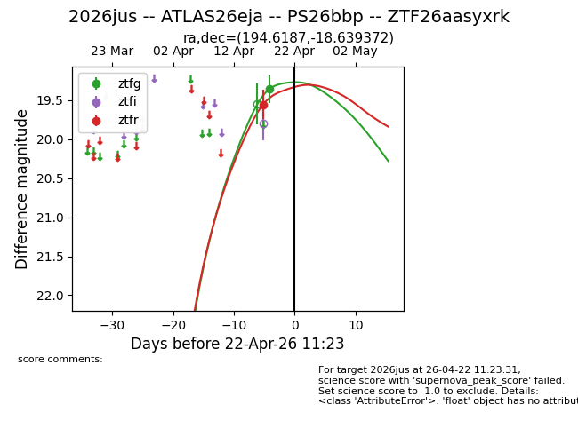
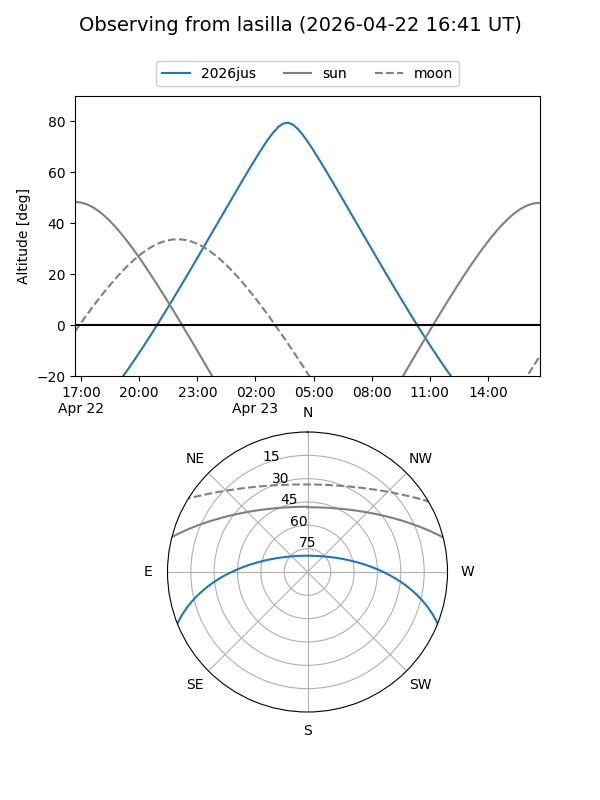
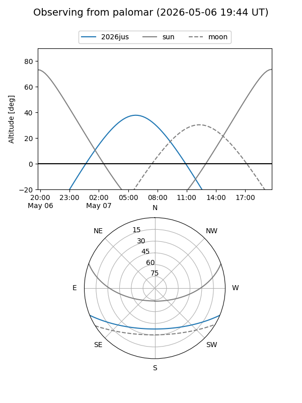
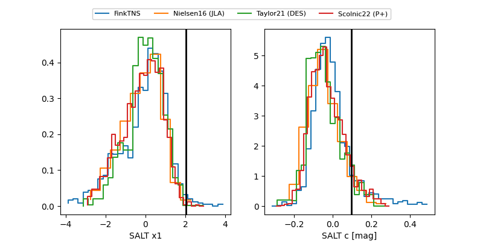

2026jus
Target 2026jus at 2026-04-22 11:27
Aliases and brokers:
FINK: link
Lasair: link
ALeRCE: link
TNS: link
YSE: link
alt names
ZTF26aasyxrk (ztf,fink_ztf)
2026jus (tns,yse)
ATLAS26eja (atlas)
PS26bbp (panstarrs)
Coordinates:
equatorial (ra, dec) = 194.6187,-18.63937
equatorial (HMS+DMS) = 12:58:28.48,-18:38:21.74
galactic (l, b) = (305.2574,+44.20060)
Flags:
Photometry:
last ztfg=19.36, ztfr=19.55
1 ztfg, 1 ztfr detections
Lightcurve

Visibility


Additional plots
